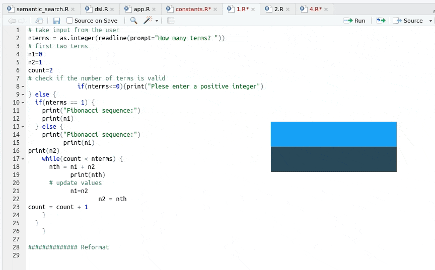

4 Utiliser les projets RStudio
Important
Tâches concernées et recommandations
Il est recommandé d’utiliser systématiquement les projets RStudio pour mener des projets statistiques avec
R, car ils contribuent à rendre les traitements reproductibles.Les projets RStudio sont également très utiles pour assurer le contrôle de version avec
Git. Il est donc recommandé de créer un projet RStudio en clonant un dépôt distant. Les éléments relatifs à l’usage deGitsont présentés dans la fiche Utiliser Git avec RStudio.Il est recommandé de désactiver la sauvegarde du
.RDataà la fermeture du projet. Pour ce faire, il faut aller dansTools > Global Optionset rester dans l’ongletGeneral. ChercherSave workspace to .RData on exit:, et choisir l’optionNever.
4.1 Pourquoi utiliser des projets RStudio?
4.1.1 Principe
Un programme est reproductible lorsque tout utilisateur est en mesure de faire tourner l’intégralité du programme sans erreur, et de retrouver des résultats identiques. Assurer la reproductibilité d’un programme est une démarche exigeante qui requiert de développer des codes propres, clairs et bien documentés.
Les projets RStudio sont des outils qui contribuent à assurer la reproductibilité d’un traitement statistique. Les projets RStudio facilitent la collaboration entre plusieurs développeurs, mais aussi l’organisation du travail lorsqu’on travaille seul.
En résumé, un projet RStudio permet de faire trois choses :
- tenir à jour la liste des programmes qui doivent être exécutés ensemble ;
- assurer un suivi précis des modifications de ces programmes (en association avec
Git) ; - assurer un suivi de l’ensemble des réglages utilisés pour exécuter les programmes (notamment les options de
R).
En pratique, un projet RStudio prend la forme d’un fichier .Rproj, qui est placé habituellement dans le dossier qui contient les programmes. Voici un exemple minimal:
4.1.2 Avantages des projets RStudio
Le principe d’un projet RStudio est de rassembler tous les éléments de contexte propres à ce projet : espace de travail, historique de commandes, variables d’environnement, options de R… Utiliser un projet RStudio présente donc de multiples avantages :
- Il centralise l’ensemble des éléments d’un projet : codes, réglages, documentation, et sorties (articles, présentations) ;
- Il facilite la compréhension du traitement pour les utilisateurs extérieurs et rend plus aisées les évolutions postérieures du projet ;
- Il organise l’interaction entre les fichiers (plusieurs codes, rédaction de documents avec R markdown…) et avec les données ;
- Il renforce la portabilité : le répertoire de travail par défaut d’un projet est le dossier où se situe le fichier
.Rproj. Cela rend les scripts indépendants de l’arborescence de la machine. Ainsi, si vous avez un codetraitement.Rsitué dans le même dossier que le fichier.Rproj, alors le chemin de ce code est./traitement.R, où que soit situé le dossier du projet.
Un point important est qu’un projet RStudio peut contenir beaucoup plus de choses que des codes R :
- tous types de scripts, quel qu’en soit le langage (SAS, Stata, R, Python, RMarkdown…) ;
- Tous les documents utiles pour la compréhension d’un projet (fichiers
txt,pdf…) ; - Tous les fichiers nécessaires à l’utilisation d’outils qui sont fréquemment associés aux projets
R(git,packrat,renv,R Markdown…).
Voici un exemple de projet RStudio : le package ci-dessous est organisé de manière à ce que les codes (stockés dans le sous-dossier R) soient associés à une documentation propre à chaque fonction (sous-dossier man) et à une documentation plus globale (sous-dossier inst).

4.2 Créer un projet RStudio
4.2.1 Créer le projet
Pour créer un projet, il suffit de faire File > New Project. Le menu suivant s’affiche :

Il y a trois méthodes pour créer un projet RStudio :
- Dans un nouveau dossier (
New Directory) :- Pour un projet tout nouveau.
- Dans un dossier existant (
Existing Directory) :- Pour organiser des codes existants sous forme de projet.
- Cloner un projet depuis un dépôt distant (
Version Control) :- Pour récupérer un projet depuis un dépôt Git distant et se connecter à celui-ci. Cette façon de procéder est détaillée dans la fiche Utiliser Git avec RStudio.
Il est fortement conseillé de créer vos projets RStudio en clonant un projet depuis un dépôt distant, car cette méthode initialise automatiquement l’usage du logiciel de contrôle de version Git. Elle met tout en place pour que vous puissiez facilement suivre les évolutions de votre projet et collaborer avec d’autres personnes.
4.2.2 Types de projets possibles
Les projets RStudio sont une forme très souple d’organisation et s’adaptent facilement à des besoins hétérogènes. RStudio facilite l’organisation du travail en proposant différents projets-types correspondant à des besoins standards : projet de traitement de données, développement d’un package R, développement d’une application shiny, écriture d’un livre avec bookdown…
Ces projets-types se distinguent par le fait qu’ils proposent des organisations différentes pour les fichiers du projet. Ainsi, un projet “Ecriture d’un livre avec bookdown” contient d’emblée une organisation par chapitres, et des fichiers pour gérer la bibliographie, tandis qu’un projet “Développement d’un package” contient des fichiers spécifiques au développement de package. Utiliser un projet-type permet donc d’avoir immédiatement une organisation qui soit cohérente avec l’objectif du projet.

4.2.3 Structure d’un projet RStudio
La création d’un projet RStudio se traduit par quatre actions, quel que soit le type de projet :
- un fichier
.Rprojest créé dans le dossier principal. Ce fichier sert à deux choses :- Il centralise les options du projet (présentées dans la suite) ;
- Il sert de raccourci pour ouvrir le projet.
- un sous-dossier caché (nommé
.Rproj.user) est créé dans le dossier principal. Les fichiers temporaires du projet sont stockés dans ce dossier (notamment les scripts sauvegardés automatiquement). Par ailleurs, ce dossier est automatiquement ignoré par.Rbuildignore,.gitignore(ne vous inquiétez pas si vous ne comprenez pas ce que cela signifie). - le projet est chargé dans
RStudio; - d’autres fichiers peuvent être créés automatiquement, en fonction du type de projet créé (voir section précédente).
Une fois que le projet est créé, le nom du projet apparaît dans la barre de projet (tout en haut à droite, rectangle rouge). Le menu en bas à droite (onglet Files, rectangle jaune) affiche les fichiers contenus dans le projet.

On peut accéder aux derniers projets ouverts avec le raccourci en haut à droite :

4.3 Travailler avec un projet RStudio
L’utilisation d’un projet RStudio modifie un certain nombre de réglages de RStudio. Cette section détaille les principaux points.
4.3.1 Que se passe-t-il lors de l’ouverture d’un projet RStudio?
Lorsqu’on ouvre un projet RStudio (en double-cliquant sur le fichier .Rproj par exemple) :
- Une nouvelle session
Rest ouverte ; - Les fichiers
.Rprofile(variables d’environnement) et.RData(sauvegarde temporaire des données) du projet sont chargés s’ils existent ; - L’historique des commandes
.Rhistorydu projet est chargé (s’il existe) dans le cadreHistory; - Le working directory est par défaut le dossier-maître du projet (le dossier dans lequel se situe le fichier
.Rproj) ; - Les documents précédemment ouverts sont restaurés dans l’éditeur
RStudio; - Les autres paramètres
RStudio(e.g. position du curseur, etc.) sont restaurés à leur valeur précédent la fermeture du projet.
4.3.2 Que se passe-t-il lors de la fermeture d’un projet RStudio?
Lorsqu’on ferme un projet RStudio :
- Les fichiers
.RDataet/ou.Rhistorysont sauvegardés dans le projet (si les options du projet l’autorisent) ; - Les documents ouverts non sauvegardés sont sauvegardés temporairement ;
- Les autres paramètres RStudio sont sauvés ;
- La session
Rassociée au projet est arrêtée.
Il est fortement conseillé de désactiver la sauvegarde du fichier .RData à la fermeture du projet. Pour ce faire, il faut aller dans Tools > Global Options et rester dans l’onglet General. Chercher Save workspace to .RData on exit:, et choisir l’option Never.
Voici pourquoi : sauvegarder et recharger les données du projet avec le fichier .RData est une très mauvaise pratique en termes de reproductibilité. En effet, il se peut que les données sauvegardées dans le .RData aient subi des modifications non documentées (par exemple via la console), ou que les instructions présentes dans les scripts du projet n’aient pas été exécutées dans l’ordre. Dans ce cas, les données contenues dans le .RData peuvent ne pas être cohérentes avec le projet, et en les utilisant vous risquez de ne pas obtenir les résultats que vous voulez.
4.3.3 Définir les options d’un projet RStudio
Il est possible de définir des options dans un projet RStudio via Tools > Project Options.... Le plus souvent, il suffit de les définir une fois pour toutes, à la création du projet. Vous pouvez en apprendre davantage sur la configuration de R en lisant la fiche [Personnaliser la configuration de R].
- Options générales :
-
(Default): utiliser les options globales ; -
Restore .RData into workspace at startup — L’option
yesn’est pas recommandée si les données sont volumineuses (ralentissement du démarrage de la session) ; -
Always save history (even when not saving .RData) — Si on choisit
yes, le projet conserve l’historique des commandes exécutées. Pour éviter que cet historique soit partagé lorsquegitest activé (par exemple si vous avez rentré en commande des mots de passe pour accéder à des services type API), assurez vous que la ligne.Rhistoryest présente dans le fichier.gitignore(elle y est par défaut mais il vaut mieux vérifier).
-
- Options
build(pour les utilisateurs avancés) :- Use devtools package functions if available : permet d’utiliser l’outil devtools pour créer le package ;
-
Generate documentation with Roxygen : permet d’automatiser la création des fichiers de documentation à partir du package
Roxygen. - On peut ajouter des options à la compilation. Par exemple, pour gagner du temps, on pourra utiliser l’option
--no-build-vignettesqui évite de re-compiler les vignettes (qui peuvent mettre du temps à compiler si elles sont longues).
4.4 Utiliser les fonctionnalités de RStudio
4.4.1 Raccourcis utiles pour l’édition de code
Pour gagner du temps, il est important d’utiliser les raccourcis pour les commandes répétitives. En voici une liste non exhaustive :
-
Ctrl+Enter: exécuter les lignes sélectionnées; -
Tab: autocomplétion; -
Ctrl+Alt+R: exécuter l’ensemble d’un script; -
Ctrl+I: réindenter code; -
Ctrl+Shift+A: reformater code; -
Alt+Up/Down: déplacer une ligne sans faire copier-coller; -
Ctrl+Deplacement souris: passage en édition verticale (curseur en colonne); -
Ctrl+Shift+M: insérer pipe%>%; -
Alt+6(Windows) : insérer opérateur assignation<-; -
Ctrl+Shift+F: rechercher une expression dans plusieurs fichiers; -
Ctrl+Shift+K: compilation d’un markdown (knitter en bon français); -
Ctrl+Shift+Alt+M: renommer la variable dans la portée (scope).

4.4.2 Les addins RStudio
4.4.2.1 Addins
Les addins sont des outils pratiques pour gagner du temps dans l’édition du code. Ils génèrent automatiquement du code ou du texte utile pour les markdown. Par exemple, il est possible d’utiliser un addin pour construire un graphique avec le package ggplot2, puis de récupérer le code qui produit le graphique.
Les addins sont bien intégrés à RStudio, et donc faciles à utiliser. Pour avoir accès à la liste de tous les addins, il suffit d’exécuter la commande install.packages('addinslist'), puis de cliquer en haut de l’éditeur sur Addins > Browse RStudio addins.
Pour utiliser un addin il faut :
- l’installer. Pour cela on peut utiliser le package
addinslist, en cliquant en haut de l’éditeur surAddins > Browse RStudio addins, puis en cliquant sur le nom de l’addinqu’on veut installer. [Avancé] Rappel: LesaddinssurCRANpeuvent être installés directement; lesaddinssurgithubnécessitent d’avoir configuré le proxy. - L’exécuter en cliquant sur son nom en haut de l’éditeur
Addins > [addin_name].


Spécificité Insee
Les addins RStudio sont disponibles sur le SSP Cloud.
Sur un poste local Insee, il est nécessaire de tenir compte du proxy en configurant les variables d’environnement https_proxy et http_proxy dans un fichier .Renviron. Pour éditer ce fichier, taper dans la console R :
usethis::edit_r_environ(scope = "user")et assigner aux variables https_proxy et http_proxy l’adresse du proxy (qui peut être obtenue en tapant curl::ie_get_proxy_for_url()). Redémarrer R pour que ces changements soient effectifs (les utilisateurs de RStudio peuvent utiliser le raccourci clavier CTRL+MAJ+F10). Contrairement à ce qui est indiqué sur le site de RStudio, il n’est néanmoins pas nécessaire d’ajouter les variables http_proxy_user et https_proxy_user dans lesquelles seraient stockés d’hypothétiques mots de passe.
Enfin, dans l’environnement AUS, il est certes possible d’installer des addins présents sur le CRAN mais le package addinslist ne fonctionnera pas (car il va chercher la liste des addins sur internet, auquel on ne peut pas accéder depuis AUS).
4.4.2.2 Quelques addins utiles
-
esquisse: apprendre à réaliser des graphiques avecggplot2; -
snippetsaddins: convertir automatiquement les/en\pour avoir des chemins valides ;- “monchemin/toto/fichier.csv” -> “monchemin\toto\fichier.csv”
-
ggedit: aide pour générer un code pour graphiquesggplot2; -
JADD: en sélectionnant une fonction, on assigne les paramètres par défaut dans l’environnement ; -
questionr: recodage facilité des variablesfactor.